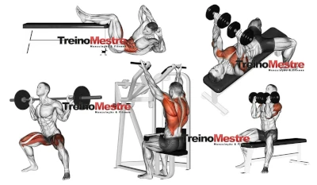

Extensão do projeto em python agora em formato de site da ficha de treino.
Nova ficha de treino com adição do full body. Treino A, B e C e com adição de duas variações de full body pra que tem poucos dias para ir na academia.
Segunda Feira
Começando com peito, ombros e Triceps na segunda feira com seguintes series:
Supino 30 com halteres
Para este será feito com halteres e não com um supino pela sua praticidade e amplitude de movimento além do conforto, mas se quiser pode utilizar o supino 30 para trabalhar a parte de cima de seu peitoral.
Crucifixo Maquina
Esse exercício trabalha as cabeças esternais dos seus principais músculos peitorais. Além de fortalecer os músculos do peito.
Desevolvimento Maquina ou com halteres
O desenvolvimento é um dos melhores exercícios para fortalecer os ombros e a parte superior das costas.
Crossover
trabalha fortalecimento muscular, incluindo melhora da resistência, aumento da flexibilidade e aprimoramento da coordenação motora.
Triceps Pulley
para fortalecer e hipertrofiar a "parte. de trás" do braço, o tríceps pulley é um dos exercícios básicos da musculação.
Elevação Lateral
A elevação lateral com halteres trabalham diferentes tipos de músculos simultaneamente como: deltóide anterior que é a frente dos ombros; o deltóide posterior que é a porção de trás dos ombros; o deltóide medial que é a parte de cima os ombros e o trapézio músculo infraespinhal.
Terça Feira
Na terça é o dia de focar nas Costas e nos bíceps com as seguintes series:
Pulley Frente
O pulley frente além de permitir os movimentos de flexões, faz com que os músculos latissimus do dorso, consiga atuar como estabilizador dos espinhais
Remada Baixa
Quando se faz remada baixa, a pessoa trabalha diversos músculos, mas principalmente o latíssimo do dorso e o trapézio, nas porções inferior e superior.
Cruxifixo Invertido
O exercício foca no fortalecimento do deltóide posterior (parte detrás do ombro).
Rosca Direta
Rosca direta com halteres é muito comum para quem deseja fortalecer os músculos dos braços.
Rosca Martelo
A rosca martelo tem como objetivo principal fortalecer e desenvolver os músculos do bíceps braquial. Além disso, também auxilia no fortalecimento dos músculos braquial e braquiorradial.
Encolhimento Trapezio
O trapézio tem uma grande importância por contribuir para a estabilização postural da região escapular, torácica e dos ombros
Quarta Feira
Hoje é dia de focar nas pernas e na parte abdominal do seu corpo com seguintes series:
Agachamento
Trabalha os membros e músculos inferiores de uma forma bem completa, além de fortalecer nosso core [músculos que suportam e estabilizam a bacia, pelve e abdomen]
Cadeira Extensora
Trabalha fortalecimento das pernas, melhoria na resistência muscular e aumento da estabilidade articular. Além disso, ajuda a prevenir lesões e a melhorar o desempenho em atividades esportivas.
Mesa flexora
Mesa Flexora é um dos melhores exercícios para trabalhar esses músculos dos membros inferiores fortalecendo a região, o que ajuda a evitar problemas nas articulações dos joelhos e quadril.
Panturrilha
O fortalecimento da panturrilha, famosa 'batata da perna', é essencial para a saúde do sistema circulatório. Isso mesmo, uma musculatura saudável nessa região é fundamental para levar o sangue das pernas de volta para o coração.
Cadeira adutora e abdutora
A Cadeira adutora e abdutora é um aparelho da linha Biodelta com sistema de alavancas e pesos livres. Na adução ativa de forma completa os músculos adutores da coxa e na abdução, os músculos glúteo médio e glúteo mínimo.
Abdominal Maquina
O abdominal em V na máquina é um exercício para quem deseja usar cargas mais altas para definir o abdômen. Além de exigir mais esforço do abdômen por conta da carga, o uso da máquina diminui a tensão nas costas e no pescoço, que é um problema comum em vários exercícios abdominais.
Quinta Feira
Hoje é dia de treino de Peito e Triceps na academia mesmos exercios da segunda feira
Ou caso prefira pode seguir o treino full body deve servir para treinar o corpo todo para esse dia
Treino Full Body 1
Supino 30 com halteres
Agachamento
Pulley Frente
Cadeira Extensora
Desevolvimento Maquina
Crucifixo Invertido
Elevação de Ouro
Sexta Feira
Hoje é dia de treino de Costas e Biceps na academia mesmos exercios da terça feira
Ou caso prefira pode seguir o treino full body deve servir para treinar o corpo todo para esse dia
Treino Full Body 2
Crucifixo Maquina
Panturrilha
Remada Baixa
Mesa
Triceps Maquina
Rosca Martelo
Triceps Francês
O tríceps francês trabalha, além do próprio tríceps, os músculos do ombro e do tronco.
Abdominal Maquina

Sabado
Hoje é dia de treino de Perna na academia ou Descanso caso tenha seguindo o full body
Domingo
Hoje é dia de descanso pois ele tão importante ou ate mais que o próprio treino. E lembre-se de se alimentar bem e tomar bastante água.